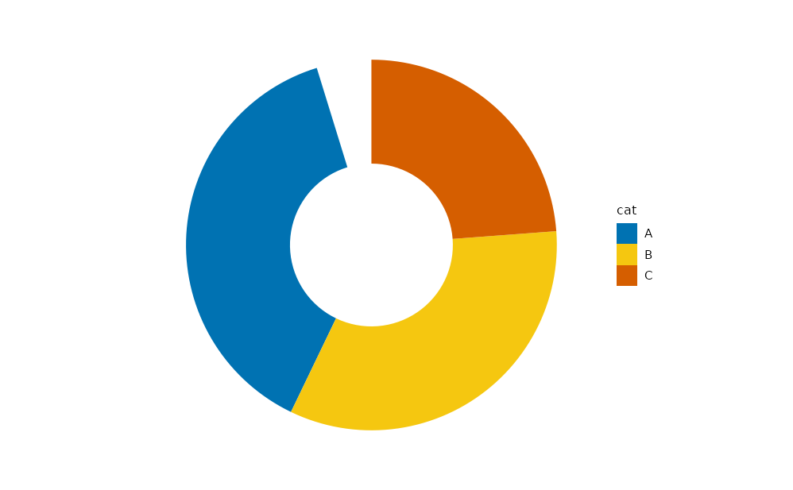
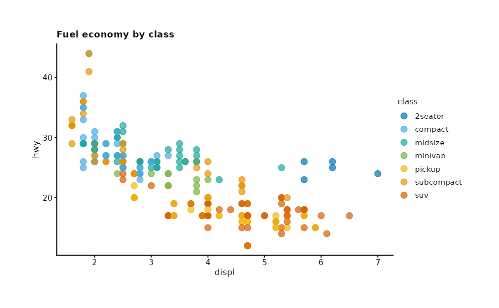

Composition first
If a visual can be expressed by combining mark_* +
project_* + scale_* + split_* in
one pipeline, plotit does not add a mark for it.
High-value combinations ship as recipes in the Gallery. A new mark is only added when
the visual cannot be expressed in a reasonable pipeline (external layout
algorithms, novel data encodings).
# Pie is a recipe: mark_bar + project_polar — not mark_arc
data.frame(cat = c("A", "B", "C"), n = c(40, 35, 25)) |>
plotit(encode(x = 1, y = n, fill = cat)) |>
mark_bar(position = "stack", width = 1) |>
project_polar(theta = "y", inner_radius = 0.4)
Verb-prefix grammar
Every exported function starts with a verb that names its role:
mark_* adds geometry, scale_* maps data to
visuals, project_* changes coordinates,
split_* facets, label_* sets text,
compose_* assembles panels, layout_* bakes
relational coordinates, style themes, export
writes files. One verb, one meaning. All of them return a plotit object
so the native pipe |> is the only composition operator
users need.
Zero-dependency relational layouts
Sankey, chord, treemap, network, tree and dendrogram layouts are
self-built, deterministic R engines. No external graph library is
required — publication-reproducible by construction
(ggbeeswarm is the single, documented exemption).
Defaults that publish
Canvas size, colour, dodge, and theme are chosen so a first plot is
already report-ready. Users override deliberately (scale_*,
style, label_*) instead of rebuilding chrome
from scratch.
Explicitly out of scope
plotit targets static print/publication output. Interaction
(tooltips, brushing, linking), 3D, animation, and automatic mark
selection are out of scope. Statistical p-values are computed by the
user and fed into mark_significance() as a table.
The pipeline is the narrative
ggplot2::mpg |>
plotit(encode(x = displ, y = hwy, colour = class)) |>
mark_point(size = 2, alpha = 0.7) |>
scale_color(range = "friendly") |>
label_title("Fuel economy by class")
#> Scale for colour is already present.
#> Adding another scale for colour, which will replace the existing scale.
Next
- Get Started — first pipelines
- Gallery — chart families by intent
- API — verb families as a system